CISCO Configuring DNS
Imagine having to remember IP addresses such as 192.168.200.3 instead of a domain name such as www.google.com. One IP address we could probably remember, but times this by the amount of the websites you visit daily and now remember IP addresses for EACH one... I certainly could not. This is where Domain Name System (DNS) assists us in using human-readable names instead of computer understood IP addresses. DNS is ultimately going to do this translation automatically so the computer knows where we are directing it.
Lab setup
- GNS3 as the network emulation software.
- I have my PC (host1).
- A CISCO router on IOSv 15.7 (Router - Cisco Modelling Labs Personal $199).
- One additional PC (host2) which is going to host a webserver.
- A CISCO layer 2 switch (Switch).
- A NAT node representing external connectivity to the internet.
- Additional learning: Internal DNS server using free software DNSMASQ.
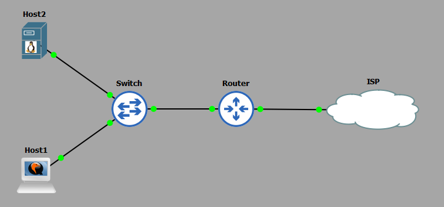
IP Schema
The IP schema for this lab will be 10.10.10.0/24. This will give us 254 usable addresses (256 - broadcast address - network address). The subnet mask will be 255.255.255.0.
DNS Configuration
In this lab we want to configure the following DNS options:
- The routers internal facing interface is to be IP addressed with 10.10.10.254.
- The routers external facing interface is to be set to DHCP which will allow it to receive an IP address from my host machine.
- The router is to provide a primary DNS service to the internal network, with unknown requests being further forwarded for resolution (this would be your home router in reality).
- Host2 (the webserver) will use IP address 10.10.10.200 and will be hosting a simple webpage. The router is to hold a DNS record pointing to this webserver; the domain name is to be slash-root.com
- When we enter http://slash-root.local in a browser on host1, it will use the router as its primary DNS to resolve the domain name to IP address and display the website.
Router Configuration
The routers interfaces are configured with IP addresses:
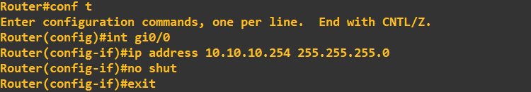
The inside interface Gi0/0 is configured with an internal address within the selected schema; in this case 10.10.10.254.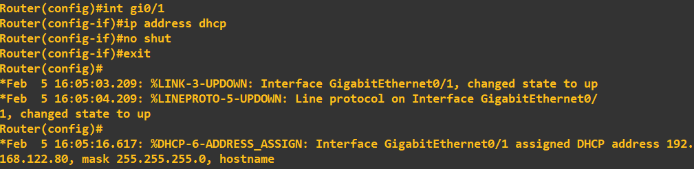
The outside interface, the interface representing connectivity to my ISP is set to DHCP to receive an external IP from my ISP. I know in this case it is a private network address, but just imagine this being a public IP assigned by your ISP. At this stage trying to PING the outside world will fail as domain-lookup has not been enabled: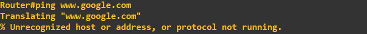
To enable DNS, simply enter: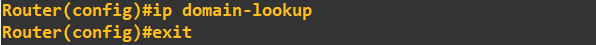
Trying to PING the outside world (www.google.com in this case) now yields results.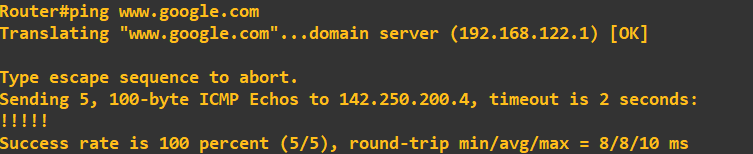
Something to bear in mind at this stage, my recursive nameserver in this instance is the DNS settings provided by my DHCP on the external interface. This can be seen here: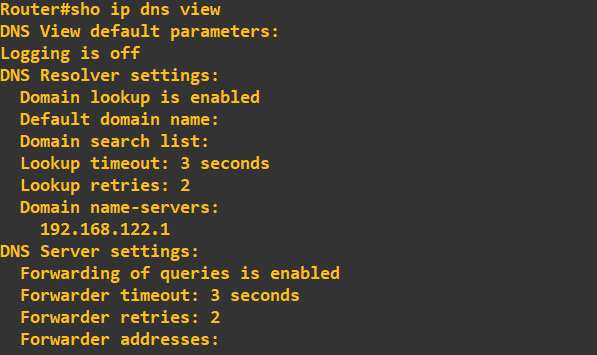
If we wanted to change our recursive nameserver to something different, we can using the following process: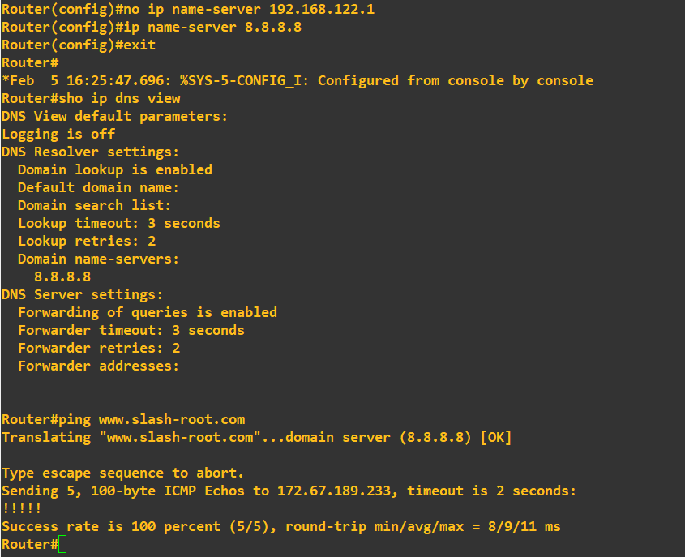
What we have done here; first we have removed the DHCP provided nameserver of 192.168.122.1 and then added 8.8.8.8 (Googles DNS service), confirmed the change by viewing our DNS settings and then ensuring it is working by using PING to an external domain (wwww.slash-root.com). At this stage we can now enable a DNS service to serve our internal network:Configuring the hosts and fixing issues
The next step is to configure host1 and host2 to use our router as their default-gateway and DNS server:
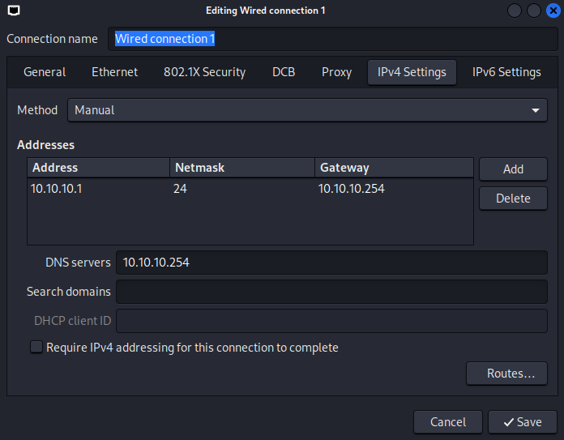
Once configured we can attempt to PING the default-gateway and then an external domain name to ensure our DNS service is working correctly.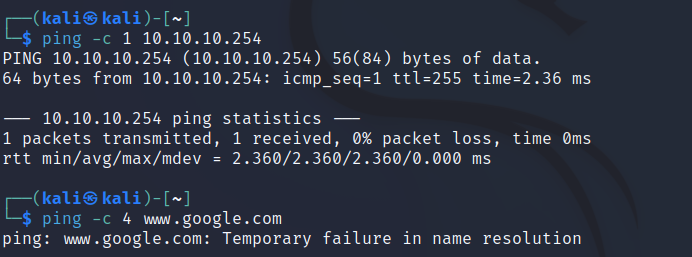
You will notice we could PING the default-gateway (our router) but we could not PING an external domain name. The issue we have run into here is; when our router receives a packet from host1 with the source IP address of 10.10.10.1 (private address) it refuses to route it any further without explicit instruction. The solution is address translation (Overload in CISCO speak). You will notice we could PING the default-gateway (our router) but we could not PING an external domain name. The issue we have run into here is; when our router receives a packet from host1 with the source IP address of 10.10.10.1 (private address) it refuses to route it any further without explicit instruction. The solution is address translation (Overload in CISCO speak). The first step is to identify which interfaces are inside and outside; we do this using the following commands: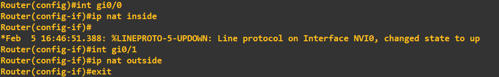
Here we have said the internal interface Gi0/0 (the one connected to our LAN) is the NAT inside. We've also said interface Gi0/1 is the NAT outside. To link this together we now run the following commands: All this command is doing, is first creating a list of IPs we want to include in this address translation (10.10.10.0/24) and then applying this address translation from the inside to the outside interface Gi0/1. Once executed we save the configuration, restart the hosts and test our DNS service again: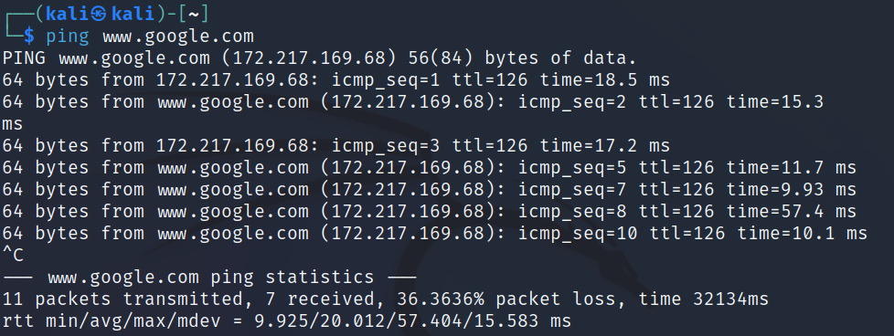
If you are interested in seeing the actual translations this is performing, you can view them by running the following command:show ip nat translationsThe next step as per the specification for this lab is to create an internal webserver on host2 and map a domain name to its IP address so host1 can access it using this name. To this we first need to IP address and create a simple webserver on host2:
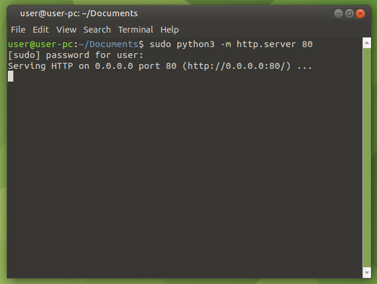
The above command is run on host2; it simply starts a very simple Python webserver on the port desigated. The file it is hosting is index.html I created as below: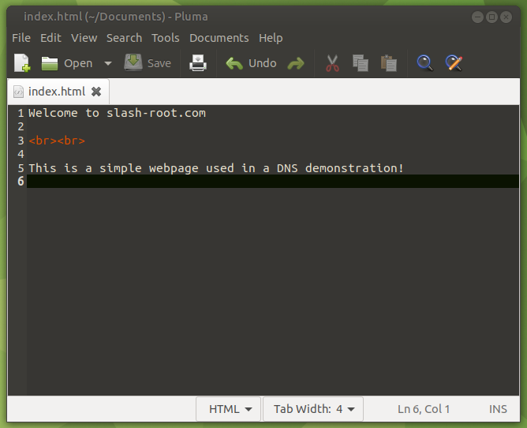
Just a reminder, the Python simple webserver will serve the files in its executed directory. As a check at this point, lets try and access the webserver now running on host2 using a browser on host1.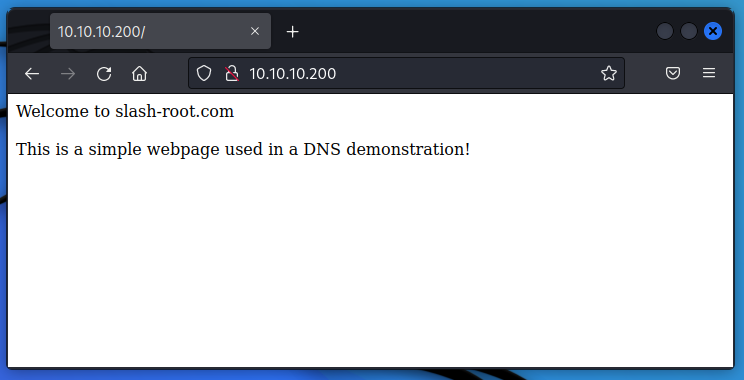
It all seems good so far, however, if we were to try and access http://slash-root.local now in our browser, it would fail. Basically, our recursive nameserver doesn't know where slash-root.local is (what IP address to point us to!). To add a record to our DNS service running on our router, all we need to do is the following: At this stage, lets just do a quick PING check from our router to slash-root.local to ensure its correct: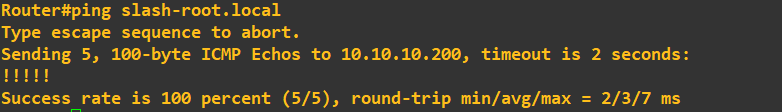
Finally, lets now try to access http://slash-root.local using a browser on host1: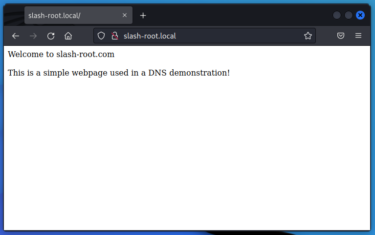
When accessing slash-root.local in our browser, host1 will make a DNS query for slash-root.local, because we've added a record to point that domain name to the address 10.10.10.200 (host2), host1 can make a successful connection to the webserver using a memorable domain name rather than host2's IP address.As a final point, we would not normally run our internal DNS solution on our CISCO router, these are usually separate machines dealing purely with DNS.